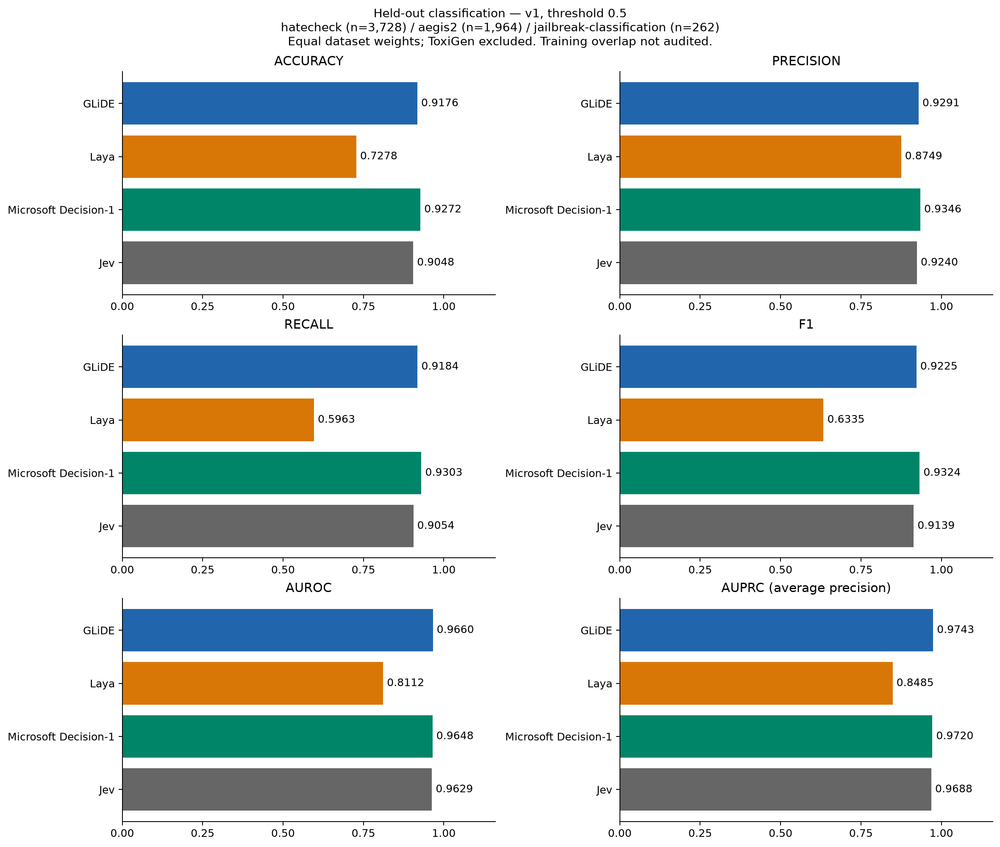
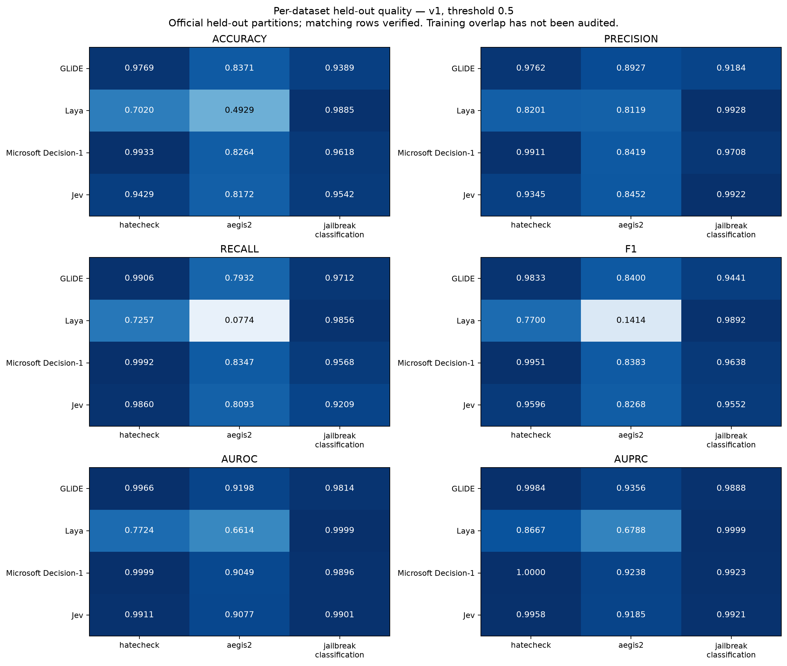
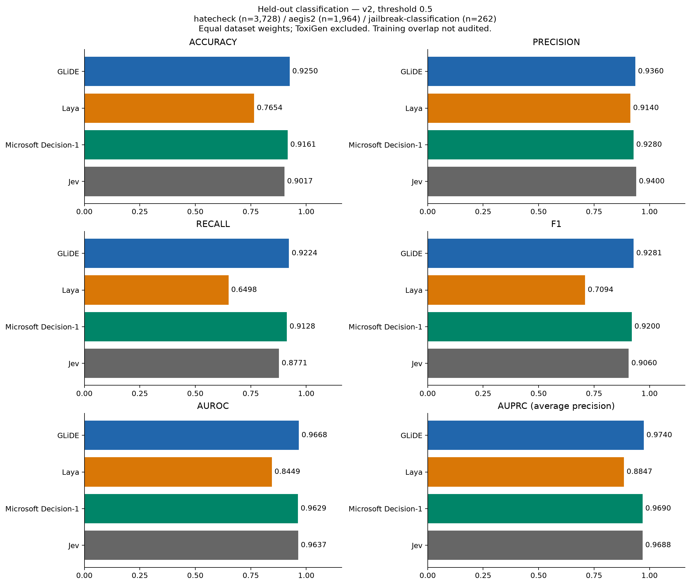
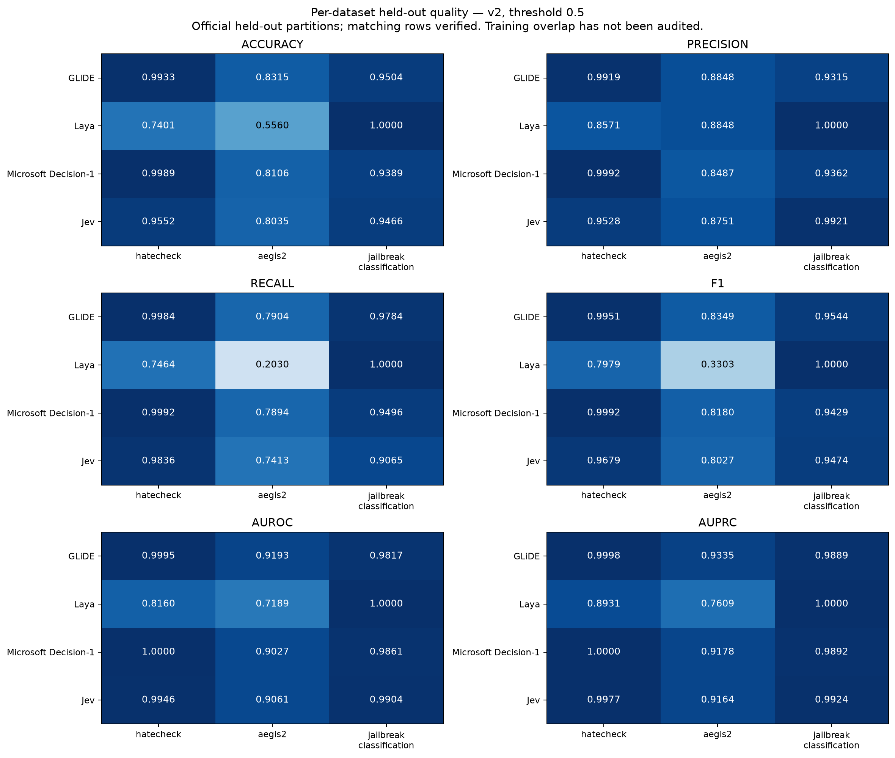
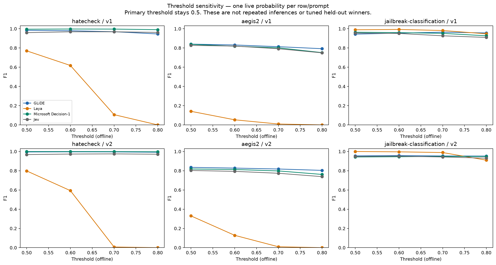
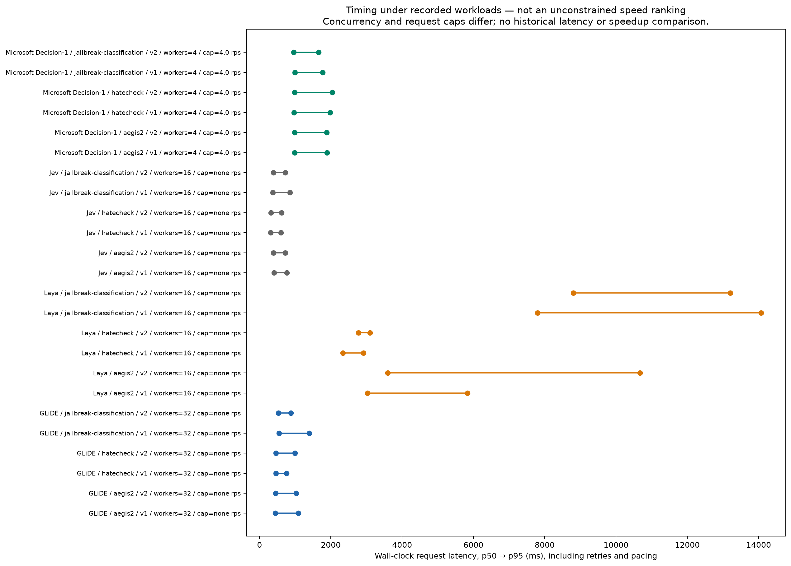
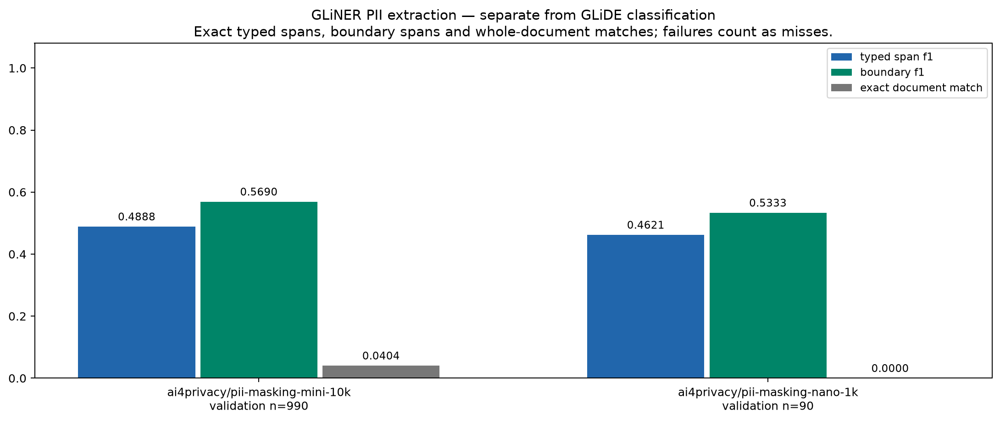
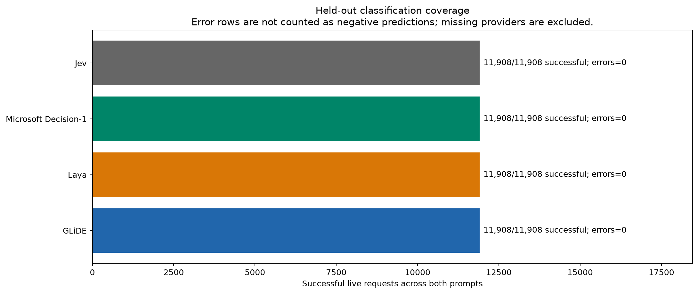

hatecheck (n=3,728) / aegis2 (n=1,964) / jailbreak-classification (n=262). Official held-out partitions; matching rows verified. Training overlap has not been audited.
Full report · Combined PDF · v1 macro CSV
v1 / 0.5; equal weights over hatecheck (n=3,728) / aegis2 (n=1,964) / jailbreak-classification (n=262). Unlike PR #20, ToxiGen is excluded and Jailbreak Classification is included. Official held-out partitions; matching rows verified. Training overlap has not been audited.

All six quality metrics on matched successful rows, v1. hatecheck (n=3,728) / aegis2 (n=1,964) / jailbreak-classification (n=262).

v2 / 0.5; equal weights over hatecheck (n=3,728) / aegis2 (n=1,964) / jailbreak-classification (n=262). Unlike PR #20, ToxiGen is excluded and Jailbreak Classification is included. Official held-out partitions; matching rows verified. Training overlap has not been audited.

All six quality metrics on matched successful rows, v2. hatecheck (n=3,728) / aegis2 (n=1,964) / jailbreak-classification (n=262).

Thresholds 0.5–0.8 derived offline from saved probabilities. No threshold selected using these test results.

Timing includes retries and rate-limit waits. Microsoft is capped at 4 rps; worker counts/caps are in request_timing.csv. Do not rank deployment speed from this chart.

Model: fastino/gliner2.5-multi-v1. Full Nano/Mini validation partitions. No document-detection, leakage or masking-success substitution for entity extraction quality.

Each provider attempts the same declared datasets/prompts. Coverage is request count, not number of unique texts or independent repeat runs.
